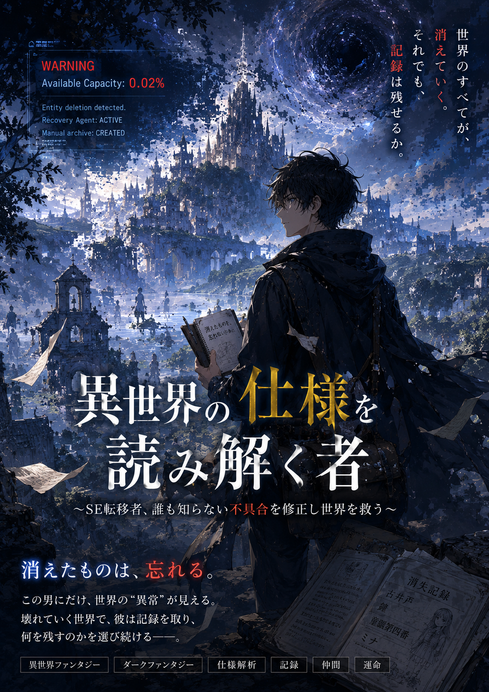

異世界から現れた青年 / 27歳
ユウ YU
「見えてしまうなら、放っておけない。」
元の世界ではSE系の仕事をしていた。合理的で面倒事を嫌うが、困っている人を見捨てられない。 知覚できるのは世界の“異常な部分”だけ。すべてを読めるわけでも、失われたものを戻せるわけでもない。
- 合理的
- 異常の知覚
- LIMITED
ORIGINAL DARK FANTASY
消えたものは、忘れる。
この男にだけ、世界の“異常”が見える。
けれど、ないものは直せない。

INTRODUCTION
静かに、世界は欠けていく。
本来あるはずのない第五の脚を持つ魔物。跡形もなく消える建物。失われていく記録。 人々はすべてを、魔王復活の前兆だと信じていた。
ただ一人、異世界から現れた青年ユウだけが、そこに残る“異常”を知覚する。 それは世界を見通す万能の力ではない。壊れた場所だけが見える、不完全な観測だった。
ないものは、直せない。
STORY
THE BEGINNING OF ANOMALY
別世界からハルカ村へ現れた、二十七歳の青年ユウ。 巡礼神官リゼとの出会いをきっかけに、彼は世界各地で起こり始めた奇妙な異常へ巻き込まれていく。
本来存在しないもの。あるはずだったもの。 そして、誰も覚えていないもの。
世界では今、何が起きているのか。
CHARACTER
THOSE WHO OBSERVE
異世界から現れた青年 / 27歳
「見えてしまうなら、放っておけない。」
元の世界ではSE系の仕事をしていた。合理的で面倒事を嫌うが、困っている人を見捨てられない。 知覚できるのは世界の“異常な部分”だけ。すべてを読めるわけでも、失われたものを戻せるわけでもない。
銀髪の巡礼神官
「信じません。ただし、嘘とも判断しません。」
紫の瞳を持つ、冷静で生真面目な巡礼神官。信仰を持ちながらも盲信せず、証拠と事実を重視する。 分からないことを分かったふりはせず、結論が出ないことを「保留します」と言える。
EPISODES
READ THE ARCHIVE
公開中の物語を、全文お読みいただけます。
プロローグ / 第一章
世界には、壊れているものがある。
第二章
最初に消えたのは、物だった。
第三章
予定にない道が、地図の外へ伸びていた。
第四章
同じ書状を持つ、二人のセドが向かい合う。
第五章
二人はまだいる。それでも、昨日は一つだった。
第六章
昨日の出来事は、誰のものだったのか。
第七章
失われた昨日を、誰が覚えているのか。
第八章
討伐の記録だけが、別の名前へ変わっていた。
第九章
同じ日に作られた報告書が、別の過去を記していた。
第十章
記録は、人をどう扱うかを決めるためにも使われる。
第十一章
四十八頁あったはずの創世記は、痕跡もなく四十七頁になっていた。
第十二章
本文へ採らなかった一頁の存在を、昔の神官は別の本へ残していた。
第十三章
同じ名を持つ二人へ、二人分の保護を与えられるか。
第十四章
朝の自分が書いた言葉まで、消してはいけない。
第十五章
二枚の紙に、同じ名前と別々の一日が残った。
第十六章
一人分にまとめたとき、二人分の昨日が消えかける。
第十七章
全員、避難済み。その一行の外に、少女はいた。
第十八章
狼は王都を襲いに来たんじゃない。
第十九章
煙は、胸の高さまでは確かに上がっている。
WORLD / KEYWORDS
FRAGMENTS OF THE WORLD
その意味がすべて明らかになるとは限らない。
人々が、すべての異常の原因だと信じている存在。
神々から人へ与えられる力。ユウだけは正常に鑑定できない。
世界の各地で囁かれ始めた、原因不明の異常。
記録の中に残る、説明できない空白。
[ DATA UNAVAILABLE ]
UNIDENTIFIED RECORD
Available Capacity: 0.02%
Recovery Agent: ACTIVE
Recovery sequence: standby
LATEST EPISODE
EPISODE 19火は燃えている。それでも煙は届かない。救援隊は、北の見張り台で帰らない巡回兵を探す。
最新話を読む READ EPISODE 19